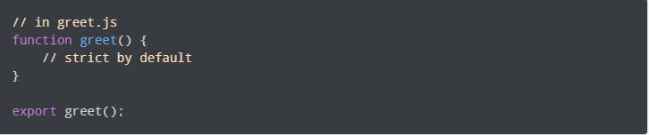

Javascript Modules
As we program grows bigger, it may contain many lines of code. Instead of putting everything in a single file, you can use modules to separate codes in separate files as per their functionality. This makes our code organized and easier to maintain.
Module is a file that contains code to perform a specific task. A module may contain variables, functions, classes etc. Let's see an example,
Suppose, a file named greet.js contains the following code:
Now, to use the code of greet.js in another file, you can use the following code:
Here, The greetPerson() function in the greet.js is exported using the export keyword
Then, we imported greetPerson() in another file using the import keyword. To import functions, objects, etc., you need to wrap them around { }.
Export Multiple Objects
It is also possible to export multiple objects from a module. For example,
In the file module.js
In main file,
Here,
This imports both the name variable and the sum() function from the module.js file.
Renaming imports and exports
If the objects (variables, functions etc.) that you want to import are already present in your main file, the program may not behave as you want. In this case, the program takes value from the main file instead of the imported file.
To avoid naming conflicts, you can rename these functions, objects, etc. during the export or during the import .
Rename in the module (export file)
Here, while exporting the function from module.js file, new names (here, newName1 & newName2 ) are given to the function. Hence, when importing that function, the new name is used to reference that function.>
Rename in the import file
Here, while importing the function, the new names (here, newName1 & newName2 ) are used for the function name. Now you use the new names to reference these functions.
Default Export
You can also perform default export of the module. For example,
In the file greet.js:
Then when importing, you can use:
While performing default export,
- random_name is imported from greet.js. Since, random_name is not in greet.js, the default export (greet() in this case) is exported as random_name.
- You can directly use the default export without enclosing curly brackets {}.
Modules Always use Strict Mode
By default, modules are in strict mode. For example,
Benefit of Using Module
- The code base is easier to maintain because different code having different functionalities are in different files.
- Makes code reusable. You can define a module and use it numerous times as per your needs.